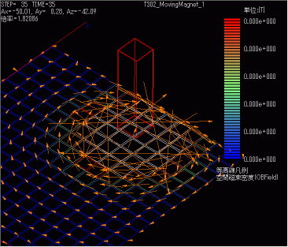
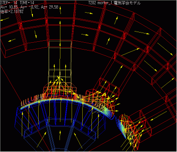

3次元リアルタイム磁場解析ソルバシステム『 Qm 』
3次元リアルタイム磁場解析ソルバシステム『 Qm 』 - 目次
概要
3次元リアルタイム磁場解析ソルバシステム『 Qm 』は積分法(磁気モーメント法)を採用しており、有限要素法（FEM）など他の手法で必要な空間メッシュ・境界条件・ゲージ条件などの複雑な入力は一切不要です。
解析領域は特に動磁場のように動きのあるモノや広い3D空間の磁場が問題となる場合に、他の解析ソフトと比べて非常に有利になります。


特長
- 空間メッシュ作成・境界条件設定が不要！
- 積分法(磁気モーメント法)を利用したソルバーですので、有限要素法のように面倒な空間メッシュ作成と境界条件設定が不要です！
- 粗いメッシュ分割でも高精度
- 有限要素法と比較し細かな要素分割を必要としません！
- 高速な3次元計算
- 分割数の少ない計算です。
- 運動及び過電流を含めた計算が容易に可能
- 部品の相互の位置が変化しても、空間メッシュがねじれたりつぶれたりすることもありません！
- ステアリング機能の実装
- タイムステップ進行状況がリアルタイムにコントロールでき、計算途中で条件変更が可能です！
- マルチスレッド機能
- 計算中でもポスト処理が可能です。
- リスタートファイル含め、入出力ファイルはテキストで、仕様はすべてオープン！
- プリポストオールインワンパッケージのソルバシステム
-
高額なプリポストシステムを別途購入する必要はありません！
※3次元プリプロセッサ『P』をバンドルしています。
『Qm』開発元、株式会社シフトロック社のホームページよりダウンロードとなります。
Professional版の評価をご要望される場合は、弊社まで直接お問合わせください。